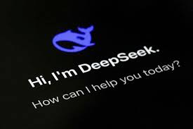

DeepSeek: The Chinese AI app that has the world talking

Febuary 15th 2025
In January, it released its latest model, DeepSeek R1, which it said rivalled technology developed by ChatGPT-maker OpenAI in its capabilities, while costing far less to create.
Its popularity and potential rattled investors, wiping billions of dollars off the market value of chip giant Nvidia - and called into question whether American firms would dominate the booming artificial intelligence (AI) market, as many assumed they would.
President Donald Trump described it as a "wake-up call" for US companies.
What is artificial intelligence?t
To understand why DeepSeek has made such a stir, it helps to start with AI and its capability to make a computer seem like a person.
A machine uses the technology to learn and solve problems, typically by being trained on massive amounts of information and recognising patterns.
The end result is software that can have conversations like a person or predict people's shopping habits.
These programs again learn from huge swathes of data, including online text and images, to be able to make new content.
But these tools can also create falsehoods and often repeat the biases contained within their training data.
Millions of people use tools such as ChatGPT to help them with everyday tasks like writing emails, summarising text, and answering questions - and others even use them to help with basic coding and studying.
Why were US companies like Nvidia hit?
DeepSeek's achievements undercut the belief that bigger budgets and top-tier chips are the only ways of advancing AI, a prospect which has created uncertainty about the future of high-performance chips.
"DeepSeek has proven that cutting-edge AI models can be developed with limited compute resources," says Wei Sun, principal AI analyst at Counterpoint Research.
"In contrast, OpenAI, valued at $157 billion, faces scrutiny over its ability to maintain a dominant edge in innovation or justify its massive valuation and expenditures without delivering significant returns."
DeepSeek's apparently lower costs roiled financial markets on 27 January, leading the tech-heavy Nasdaq to fall more than 3% in a broad sell-off that included chip makers and data centres around the world.
Nvidia's stock price plunged 17% on Monday before it began to recover on Tuesday.
The chip maker had been the most valuable company in the world, when measured by market capitalisation.
But it fell to third place after Apple and Microsoft on Monday, when its market value shrank to $2.9tn from $3.5tn, Forbes reported.
DeepSeek is a privately owned company, which means investors cannot buy shares of stock on any of the major exchanges.
How has China reacted to DeepSeek's impact?
DeepSeek's rise is a huge boost for the Chinese government, which has been seeking to build tech independent of the West.
While the Communist Party is yet to comment, Chinese state media was eager to note that Silicon Valley and Wall Street giants were "losing sleep" over DeepSeek, which was "overturning" the US stock market.
"In China, DeepSeek's advances are being celebrated as a testament to the country's growing technological prowess and self-reliance," says Marina Zhang, an associate professor at the University of Technology Sydney.
"The company's success is seen as a validation of China's Innovation 2.0, a new era of homegrown technological leadership driven by a younger generation of entrepreneurs."
But she also warned that this sentiment may also lead to "tech isolationism".